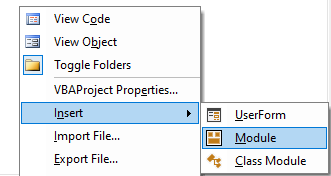
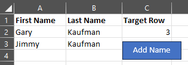

VBA: Open UserForm With Button In Excel
This guide will quickly explain how you can create a button in your Excel file that can open up a UserForm.
First you will need to create a new module in the VBA editor by right clicking the project window and selecting Insert > Module.

Using the Properties window, rename the module as modMain.

Inside the code window for the module, add the following replacing UserForm1 with whatever the name of your UserForm is:
Sub RunForm()
UserForm1.Show
End Sub
Next, return to your Excel sheet, go to the Insert tab, and add a shape with whatever text you prefer.

Right-click the shape you created and select Assign Macro. From the window that pops up, select the RunForm macro that we just created.

You are all set! Now click the button and watch that magical UserForm appear! 
Don't forget to save the file as .xlsm to enable macros so that your UserForm will run!